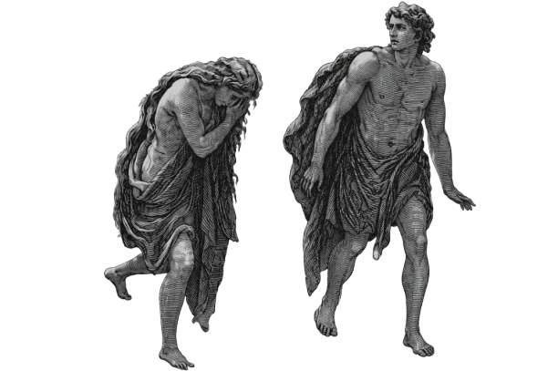
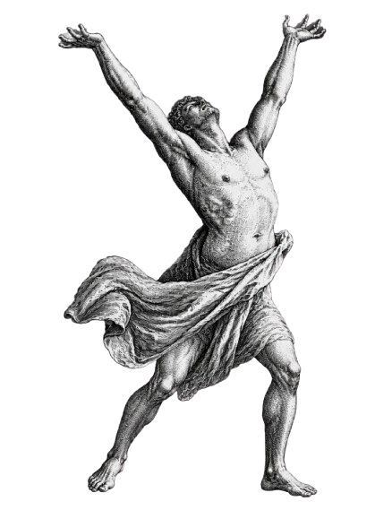
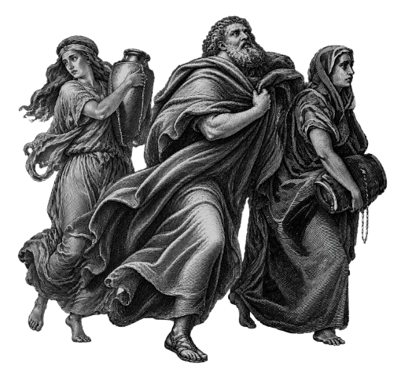
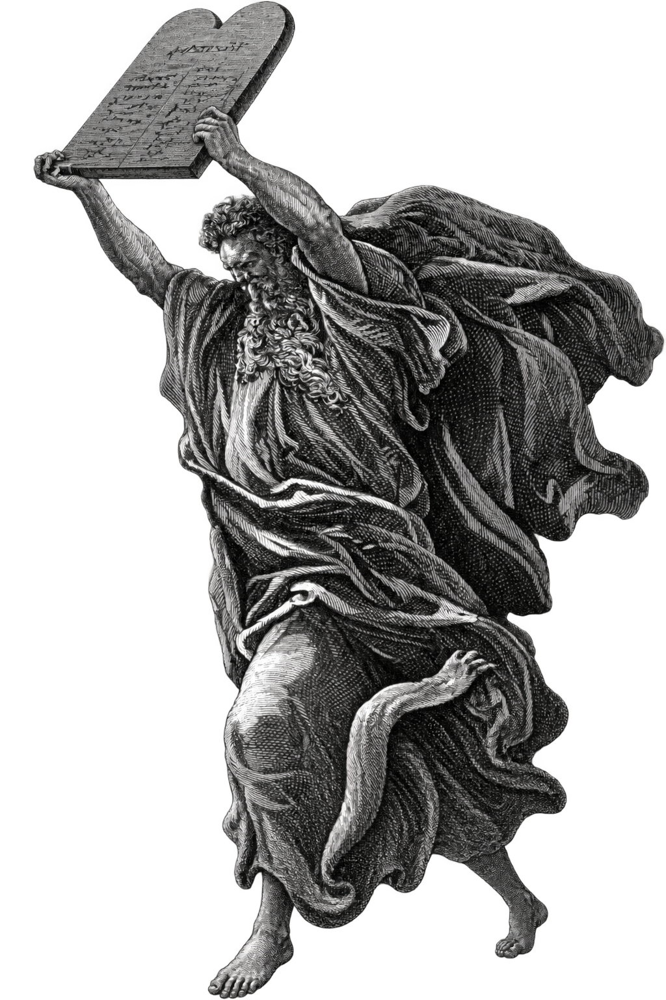
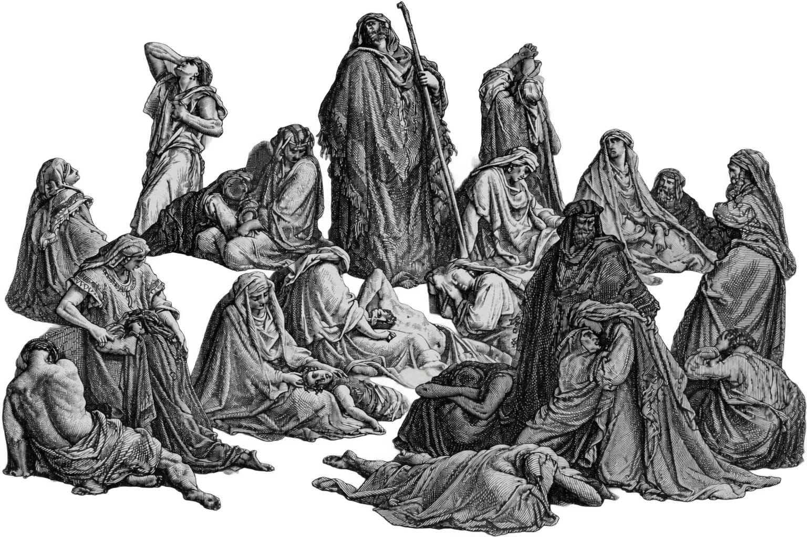

The Fall of Eden

The Story of Adam and Eve
In the quiet of Eden, innocence trembled beneath a single forbidden fruit. The first taste of rebellion opened the door to fear, shame, and a world forever haunted by the loss of paradise.
The Descent of Lucifer

The Fallen Star
Once a powerful angel of Heaven, Lucifer fell because of pride and rebellion. His fall became a symbol of temptation, darkness, and the consequences of defying divine order.
The First Bloodshed
Brother Against Brother
Jealousy can rot the soul before it ever breaks the skin. Cain's rage turned brother against brother, and the first murder stained the earth with sorrow, guilt, and the chill of divine judgment.
The Deluge of Judgment
The Flood That Ended the World
The sky darkened, the earth groaned, and a terrifying rain fell without end. Humanity was swept away in a tidal wave of judgment, while the ark stood like a trembling refuge against the doom of the world.
The Shattered Heights

Language of Confusion
Men built higher, louder, and bolder, reaching toward the heavens in pride. Then the language of the world split into chaos, and the dream of one united kingdom collapsed into fear, confusion, and scattered shadows.
The Fire Beneath the Sky

The Cities of Ash
The cities of Sodom and Gomorrah were swallowed by fire and terror after sin had grown so foul it poisoned the air itself. Their collapse became a warning echo through history: when wickedness runs wild, judgment follows.
The Broken Oath

Promises in Ruin
Every promise broken by humanity deepened the darkness. The covenant was sacred, yet disobedience spread like a plague, and each betrayal carried the cold weight of judgment, grief, and fear.
The Ruin of Jerusalem

Smoke Over the Walls
Jerusalem fell beneath the shadow of invasion, its walls trembling under the weight of judgment. Smoke, sorrow, and exile spread across the city like a nightmare that would not end, a grim price for turning away from the sacred.
The Final Reckoning
When the Heavens Open
The final trumpet will sound across a trembling world, and every hidden sin will rise into the light. Then the doors of eternity will open, and the fate of every soul will be sealed in silence and dread.